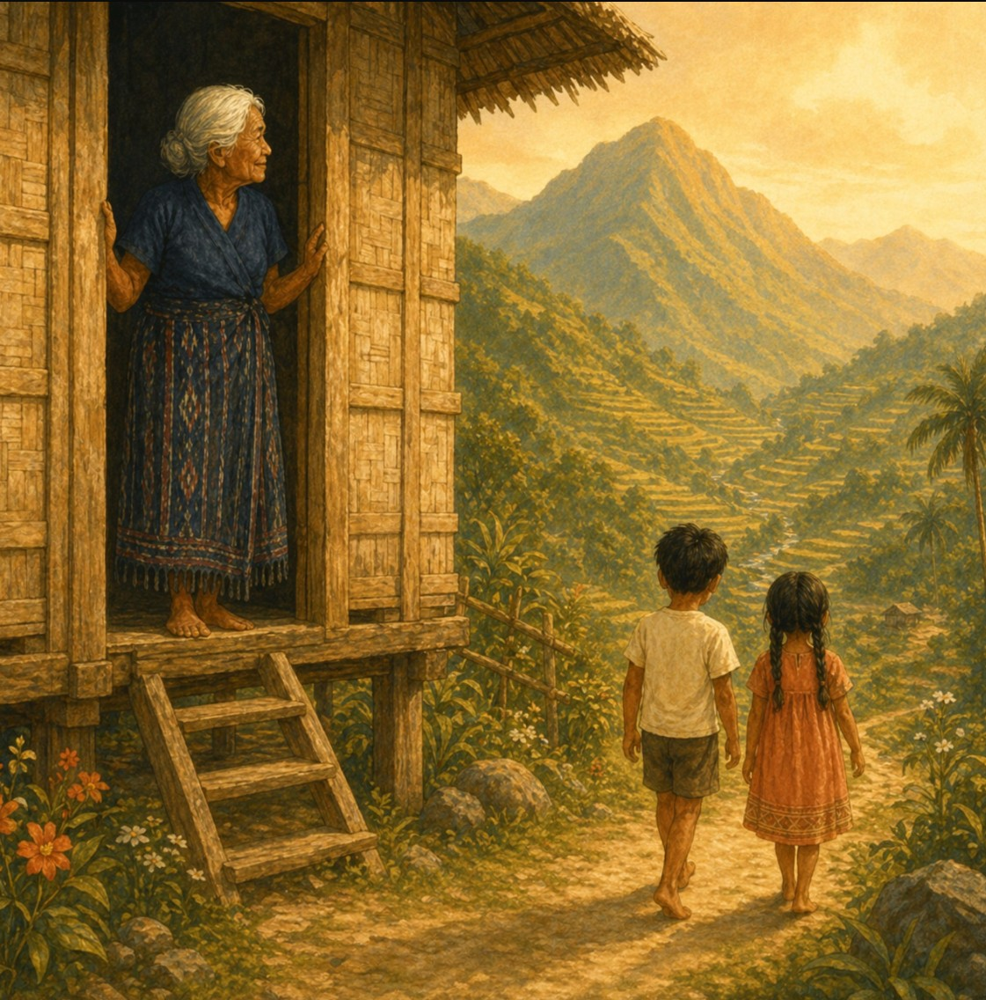

The Mountains Were Never Backwards
On what gets lost when a culture learns to look away from its highlands

There is a compliment Filipinos give each other that isn't quite a compliment.
Ang ganda mo — you look so mestiza. You speak English so well. You don't seem like you're from the province. These are offered warmly, without malice, as genuine admiration. And they are. That's the problem. The admiration is real, which means something underneath it is real too — so thoroughly absorbed that it no longer feels like a judgment. It feels like taste. Like refinement. Like simply knowing what is better.
There is a hierarchy in the Philippines that most Filipinos have absorbed so completely they no longer notice it.
The city is progress. The province is quaint. And the mountains — the highlands, the rice terraces, the communities that have farmed and sung and prayed in languages older than the colonial record — the mountains are backwards.
This isn't stated outright. It doesn't have to be. It lives in the way certain accents get corrected. In the quiet embarrassment some families feel about where their grandparents came from. In the word dialect.
Kathleen is my wife, my co-author, and a native Ilocano speaker. She grew up in Ilocos Norte — not a remote province. It has highways and universities and a coastline that draws tourists. But even there, the orientation was outward. Toward Manila. Toward English. Toward the things that signal arrival in a world shaped by centuries of colonial preference.

The mountain peoples — the indigenous communities of the Cordillera, the farmers who tend the terraces that have been called a wonder of the world — were not the aspirational image. They were the past. Something to acknowledge on a school trip, maybe. Not something to claim.
We have been thinking about this a lot while making these books.
When we put Ilocano on top and English below, we are making an argument. When we build a book around a folk song that belongs to the mountains, we are making an argument. When Lola stands in the doorway watching the children walk toward the peaks — her gaze extending past them, toward the geography that will hold them — we are making an argument.
The argument is this: the mountains were never backwards. The wisdom that lives there — in the songs, in the language, in the relationship with land that doesn't treat it as property — that wisdom has something to say to all of us. Including the people who were taught to look away from it.
A word about terms, because they matter here.
When we say indigenous, we mean all the peoples who belong to this land before the colonial record begins — and that includes Ilocanos. This is worth saying plainly because many Ilocanos don't think of themselves that way. The Igorot, the Ifugao, the Kalinga — the highland tribal communities of the Cordillera — are often understood as the indigenous ones. The traditional ones. The ones who stayed. Ilocanos, with their cities and coastlines and long history of migration, sometimes place themselves in a different category. But that distinction was handed to them. All of these peoples are native to this land. The hierarchy between them is not.
AntiBlackness is a term that sometimes stops people because it sounds like it belongs to a different conversation — an American one. But it describes something that shows up wherever colonial power took root, which is most of the world. It isn't just about race in the broad sense. It's about the specific devaluation of darkness itself — dark skin, dark geography, rural and traditional ways of life — as signs of being behind. Less refined. Less desirable. Less. You may not have had a word for it before. But if you grew up Filipino, you have felt it. In the compliment that isn't quite a compliment. In the mountains being called backwards.
A picture book can't dismantle that. But a picture book can say: these children are beautiful. This song is worth singing. These mountains are worth claiming.
That's what we're trying to say.
Nu kayat mo gayyem ket umay ka
Umay ka diay bantay a nalawa
If you want, my friend, then come along — come to the wide and open mountains.
The song has been saying it all along. We're just passing the invitation forward.
If this is the kind of conversation you want to keep having — about language, about what gets passed down and what gets lost, about what it means to raise a child who knows where they come from — stay with us. Our next piece goes deeper into mother tongue education and what happens to children when the language of home is treated as less than. We think it will stay with you.
Bambantay Tuturod: The Mountains Stand With Us is available now at littlehollowbooks.com. Written by Avi Penhollow and Kathleen Penhollow — a family's stories, in two languages.